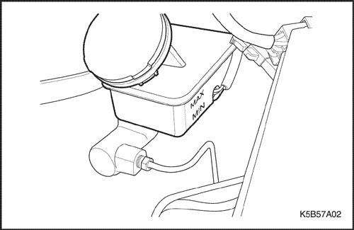
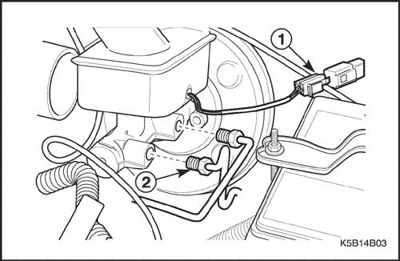
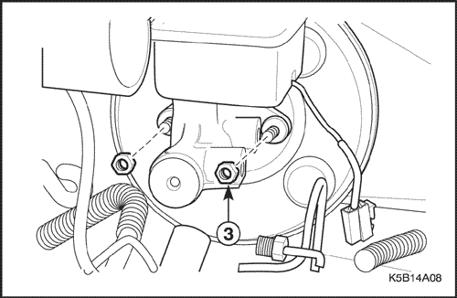
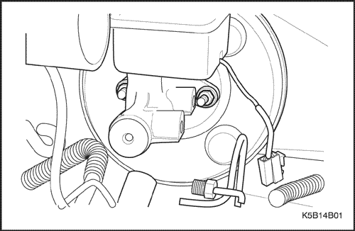
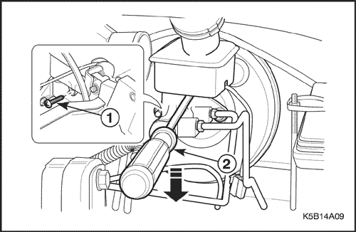
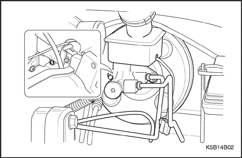
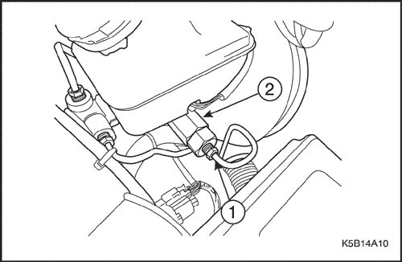
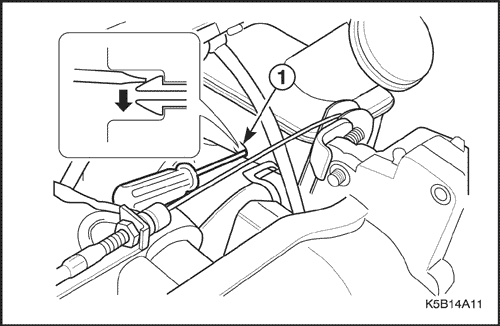
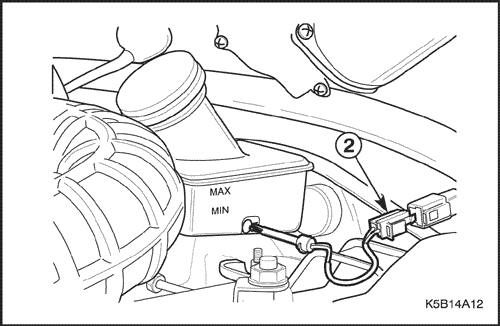
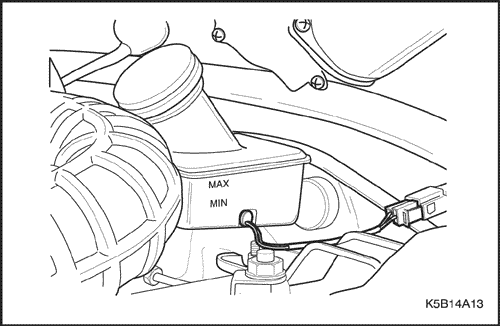

SECCIÓN 4B
CILINDRO MAESTRO
ESPECIFICACIONES
Especificaciones generales
| Aplicación | Unidad | Descripción |
| Cilindro maestro | Tipo | - | Tándem |
| Diámetro interior del alojamiento | mm (pulg.) | 20.64 (0.81) |
| Válvula dosificadora | Presión de corte | kPa (psi) | 3,000 (435.1) |
| Coeficiente de presión | - | 0.25 : 30 |
Especificaciones de apriete de la sujeción
| Aplicación | N•m | Árbol de transmisión izquierdo | Articulación |
| Tornillo del depósito de líquido de frenos | 4 | - | 35 |
| Tuercas de fijación del cilindro maestro | 16 | 12 | - |
| Rácores que unen los tubos de freno al cilindro maestro | 16 | 12 | - |
| Rácores que unen los tubos de freno a la válvula dosificadora | 16 | 12 | - |
| Rácores que unen los tubos de freno al cilindro de rueda trasero | 16 | 12 | - |
| Rácores que unen los tubos de freno a la pinza de freno | 16 | 12 | - |
| Válvula dosificadora | 22 | 16 | - |
DIAGNÓSTICO
Comprobación del nivel del líquido de frenos
- Compruebe el nivel de líquido.
- Si el nivel de líquido está por debajo de la marca de MAX, rellene con líquido de frenos hasta la marca MAX.



MANTENIMIENTO Y REPARACIÓN
servicio con vehículo en marcha

Conjunto de cilindro maestro
Procedimiento de desmontaje
- Desmonte el conjunto del filtro del aire. Consulte la sección 1B1, Mecánica del motor SOHC.
- En aquellos vehículos sin sistema de frenos ABS, desmonte la válvula dosificadora. Consulte el apartado "Válvula dosificadora" en esta sección.
- Desmonte el cilindro maestro.
- Desenchufe el conector eléctrico (1).
- Afloje los rácores de los tubos de freno (2).
- Tape la abertura del cilindro maestro para evitar la pérdida de líquido o la entrada de suciedad.

Aviso: El líquido de frenos puede dañar la pintura, si se derramara líquido sobre una superficie pintada, lávela inmediatamente con agua fría.
- Quite las tuercas de fijación del cilindro maestro (3).

procedimiento de montaje
Importante: Emplee solamente líquido de frenos recomendado por Daewoo.
- Monte el conjunto del cilindro maestro con sus tuercas.
Apretar
Apriete la tuerca de fijación hasta 16 N•m (12 lb-pie).
- Monte los rácores de los tubos de freno al cilindro maestro.
Apretar
Apriete los rácores hasta 16 N•m (12 lb-pie).
- Enchufe el conector eléctrico.
- En aquellos vehículos sin sistema de frenos ABS, monte la válvula dosificadora. Consulte el apartado "Válvula dosificadora" en esta sección.
- Monte el conjunto del filtro de aire. Consulte la sección 1B1, Mecánica del motor SOHC.
- Purgue el sistema de frenos. Consulte la Sección 4A, Frenos hidráulicos.

Depósito de líquido de frenos
Procedimiento de desmontaje
- Desenchufe el conector del interruptor de nivel de líquido de frenos. Consulte el apartado "Interruptor de nivel del líquido de frenos" en esta sección.
- Desmonte el depósito.
- Extraiga el líquido de frenos.
- Quite el tornillo (1).
- Use un destornillador plano para desmontar el depósito de líquido de frenos (2).
Aviso: No fuerce demasiado un lado para evitar daños en el depósito al desmontarlo.

procedimiento de montaje
Importante: Emplee solamente líquido de frenos recomendado por Daewoo.
- Monte el depósito con su tornillo.
Apretar
Apriete el tornillo hasta 4 N•m (35 lb-pie).
- Monte el conector del interruptor de nivel del líquido de frenos. Consulte el apartado "Interruptor de nivel del líquido de frenos" en esta sección.
- Añada líquido de frenos.
- Purgue el sistema de frenos. Consulte la Sección 4A, Frenos hidráulicos.

Válvula dosificadora (en vehículos sin sistema de frenos ABS)
Procedimiento de desmontaje
- Desmonte la válvula dosificadora.
- Afloje los rácores que unen los tubos de freno a la válvula dosificadora (1).
- Desmonte la válvula dosificadora (2).
- Tape las aberturas de los rácores de los tubos de freno y la válvula dosificadora para evitar la pérdida de líquido o la entrada de suciedad.
Aviso: El líquido de frenos puede dañar la pintura, si se derramara líquido sobre una superficie pintada, lávela inmediatamente con agua fría.
procedimiento de montaje
- Monte la válvula dosificadora.
Apretar
Apriete la válvula dosificadora hasta 22 N•m (16 lb-pie)
- Monte el rácor del tubo de freno.
Apretar
Apriete los rácores que unen los tubos de frenos a la válvula dosificadora hasta 16 N•m (12 lb-pie).
- Purgue el sistema de frenos. Consulte la Sección 4A, Frenos hidráulicos.

Interruptor de nivel del líquido de frenos
Procedimiento de desmontaje
- Desmonte el manguito de vacío del servofreno. Consulte la sección 4C, Servofreno.
- Desmonte el interruptor del nivel del líquido de frenos.
- Desmonte el sistema de bloqueo del interruptor de nivel del líquido de frenos con un destornillador plano (1).

- Desenchufe el conector eléctrico (2).

procedimiento de montaje
- Monte el interruptor del nivel del líquido de frenos.
- Enchufe el conector eléctrico.
- Monte el manguito de vacío en el servofreno. Consulte la sección 4C, Servofreno.
REPARACIÓN DE LA UNIDAD
El cilindro maestro no puede repararse. Un cilindro maestro defectuoso debe sustituirse en su totalidad.
DESCRIPCIÓN GENERAL Y FUNCIONAMIENTO DEL SISTEMA
Cilindro maestro
El cilindro maestro está diseñado para su empleo en un sistema dividido diagonalmente. El freno delantero derecho y el trasero izquierdo se sirven del pistón primario. El freno delantero izquierdo y el trasero derecho emplean el pistón secundario.
El cilindro maestro incorpora la función de un cilindro maestro estándar doble, más la del indicador del nivel de líquido de frenos y el de las válvulas dosificadoras en el sistema de frenos sin antibloqueo.
Las válvulas dosificadoras limitan la presión de salida en los frenos traseros, una vez que la presión del cilindro maestro ha alcanzado un valor determinado previamente.
Importante:
- Sustituya todos los componentes incluidos en los kits de reparaciones utilizados para reparar el cilindro maestro.
- Lubrique las piezas de goma con líquido de frenos limpio para facilitar su montaje.
- No utilice aire comprimido de taller con aceite en su contenido en las piezas del sistema de frenos, ya que esto podría dañar las piezas de goma.
- Si se desmonta o se desconecta cualquier componente del sistema hidráulico, puede resultar necesario tener que purgar la totalidad o una parte del sistema de frenos.
- Los valores de los pares de apriete especificados son para elementos de sujeción secos y sin lubricar.
- Efectúe todas las labores de reparación en un banco limpio y libre de todo resto de aceite mineral.
Válvula dosificadora
Las válvulas dosificadoras limitan la presión de salida en los frenos traseros en los vehículos sin ABS, una vez que la presión del cilindro maestro ha alcanzado un valor determinado previamente. Esto se utiliza cuando el freno trasero necesita aplicar menos fuerza para obtener una frenada óptima y suele darse en configuraciones de frenos de disco/tambor. Para vehículos con ABS, consulte la
Sección 4F, Sistema antibloqueo de frenos.
Sensor de nivel de líquido
El sensor de nivel de líquido va acoplado al depósito del líquido de frenos. Este sensor activará la luz de aviso de los frenos si detecta una situación en la que el nivel del líquido sea bajo. Una vez corregido el nivel del líquido, dicha luz se apagará.